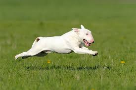

| |
| Category | Dog Breeds in Category | Picture |
| Sporting | Labrador Retriever, German Shorthaired Pointer, Cocker Spaniel | |
| Hound | Bloodhound, Greyhound, Dachshund | |
| Working | Boxer, Great Dane, Rottweiler |  |
| Terrier | Bull terrier, Scottish Terrier, Jack Russell Terrier |  |
| Toy | Chihuahua, Pug, Shih Tzu | |
| Non Sporting | Bulldog, Dalmatian, Poodle | |
| Herding | Border Collie, German Shepherd, Corgi |